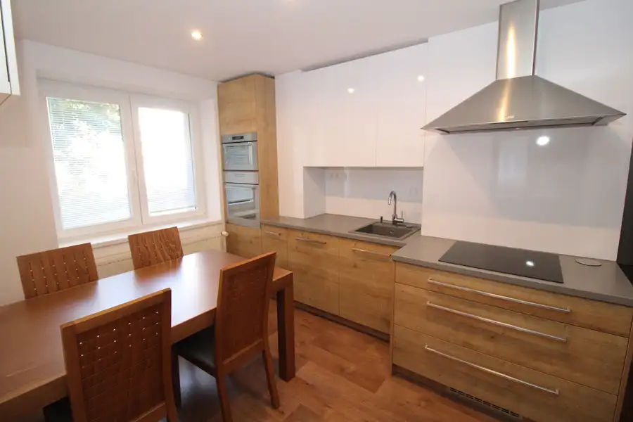
Aktuálna ponuka
12 nehnuteľností, predovšetkým byty, rodinné domy, pozemky. Každá má vlastnú stránku s fotkami, popisom a mapou.
Prezrieť ponukuZuzana DanyiRealitná maklérka
Realitná maklérka · BRANDreal
Predaj a prenájom nehnuteľností · Piešťany, Ostrov
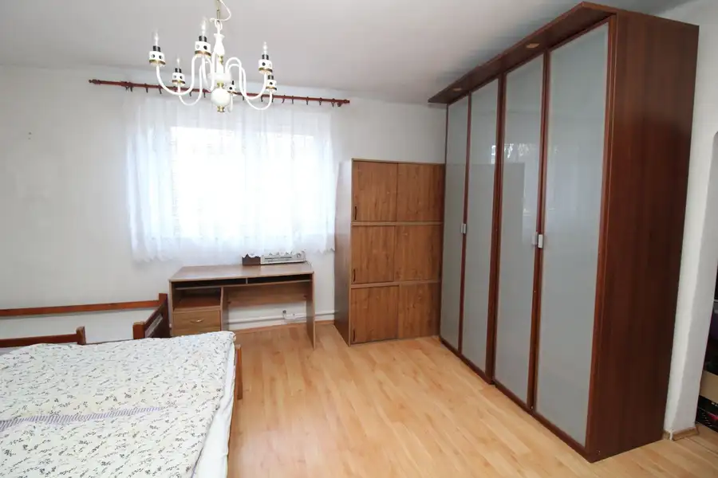
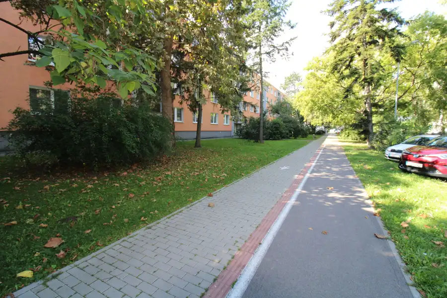
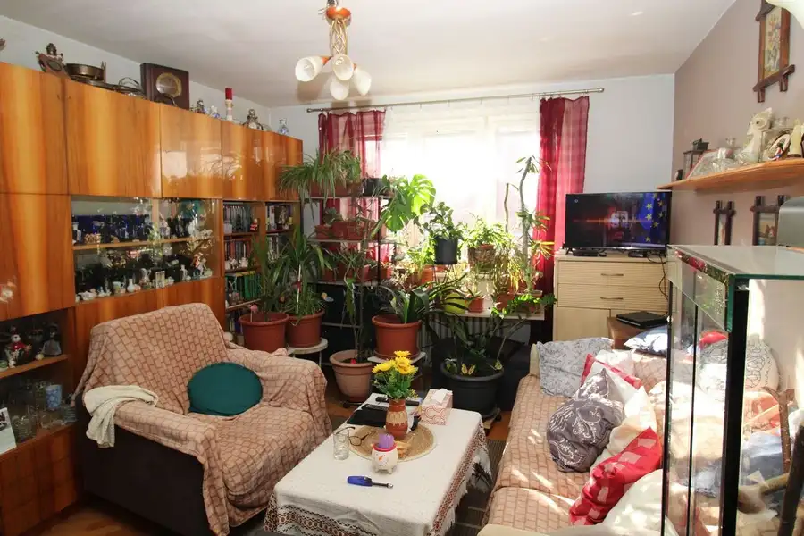
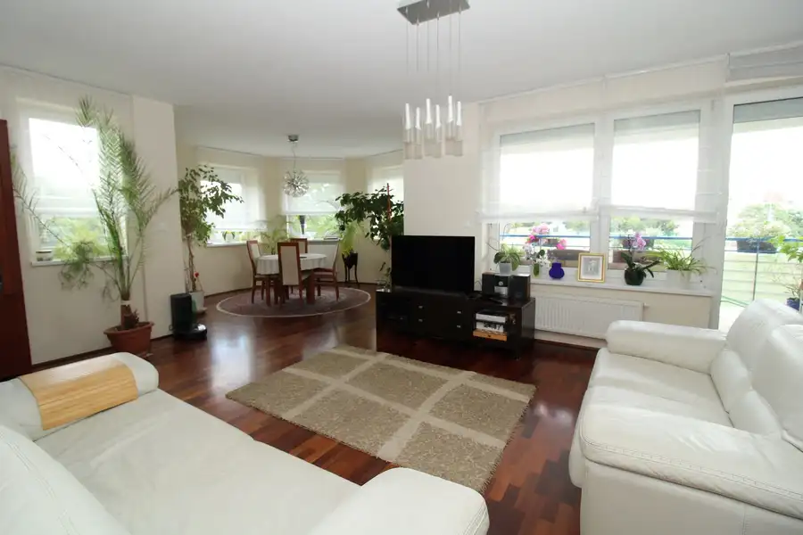
Byt10 320 000 €BRANDreal – byt v novostavbe pri mestskom parku s rozlohou 126 m² plus terasa 17 m² Piešťany 4-izbový126 m²2. podlažie Ponúkame vám priestranný byt v novostavbe o rozlohe 126 m² s veľkou terasou 17 m² a balkónom 4 m² na ulici E. Belluša v Piešťanoch. Lokalita je v…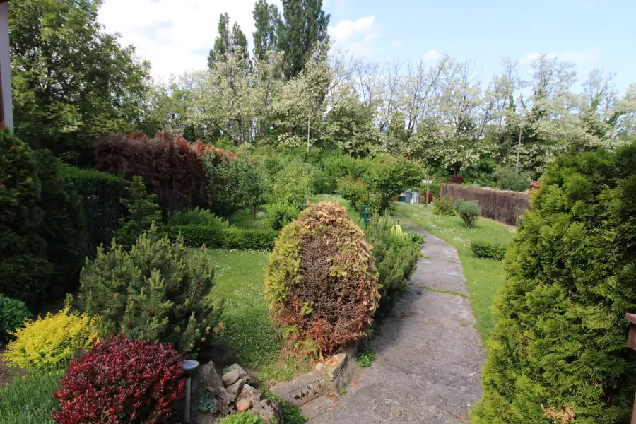
Pozemok10 149 900 €BRANDreal – Pozemok s chatkou, 871 m², Piešťany Piešťany 871 m² Ponúkame vám na predaj pozemok na stavbu rodinného domu o výmere 871 m² na Ceste J. Alexyho v Piešťanoch v blízkosti jazera Sĺňava. Pozemok je…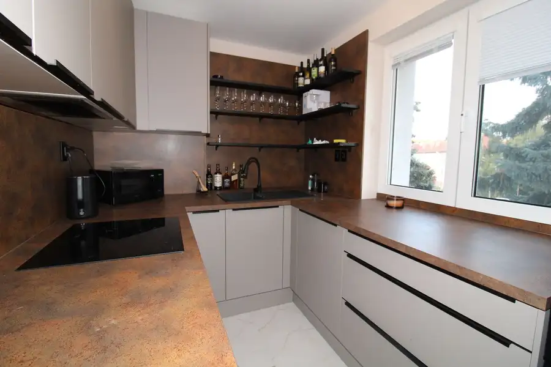
Byt10 208 000 €BRANDreal - 3 iz. čerstvo prerobený klimatizovaný byt v centre na A. Dubčeka, 66 m² Piešťany Piešťany 3-izbový66 m²2. podlažie Bývajte ako v novostavbe v práve zrekonštruovanom byte.Ak túžite po modernom bývaní v centre diania a mať po ruke obchody, reštaurácie, školu,…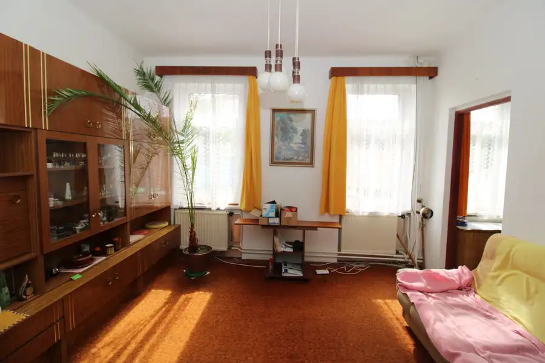
Dom10 199 900 €BRANDreal – menší 5-izbový rodinný dom v starých Piešťanoch pri parčíku Piešťany 85 m² Realitná kancelária BRANDreal ponúka na predaj menší 5-izbový rodinný dom situovaný v obľúbenej lokalite starých Piešťan, priamo pri parčíku na ulici…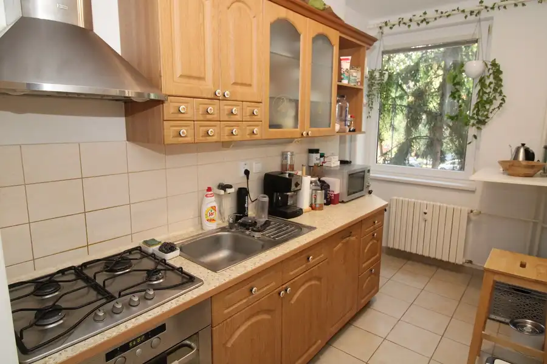
Byt8 129 000 €BRANDreal – 2 izbový byt na A. Hlinku, 50 m² Piešťany 2-izbový50 m²1. podlažie Mame pre Vás príjemný 2 izbový byt nachádzajúci sa na ideálnom prvom poschodí z troch v bytovom dome bez výťahu s výhľadom do okolitej zelene plnej…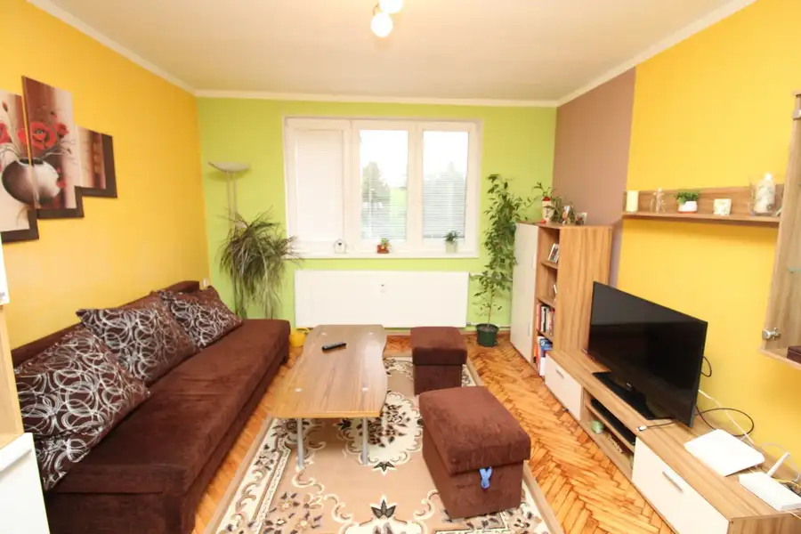
BytNové7 Cena dohodouBRANDreal – prenájom 2 izbového bytu na A.Hlinku Piešťany Piešťany 2-izbový45 m²3. podlažie Ponúkame vám na prenájom, 2 izbový byt na ulici A. Hlinku v Piešťanoch, situovaný v blízkosti obchodného domu Kocka a autobusovej stanice. Byt sa…Tomuto výberu zatiaľ nezodpovedá žiadna ponuka. Napíšte mi, čo hľadáte.
Volám sa Zuzana Danyi. Som realitná maklérka kancelárie BRANDreal a pôsobím predovšetkým v lokalitách Piešťany a Ostrov (Trnavský kraj).

12 nehnuteľností, predovšetkým byty, rodinné domy, pozemky. Každá má vlastnú stránku s fotkami, popisom a mapou.
Prezrieť ponuku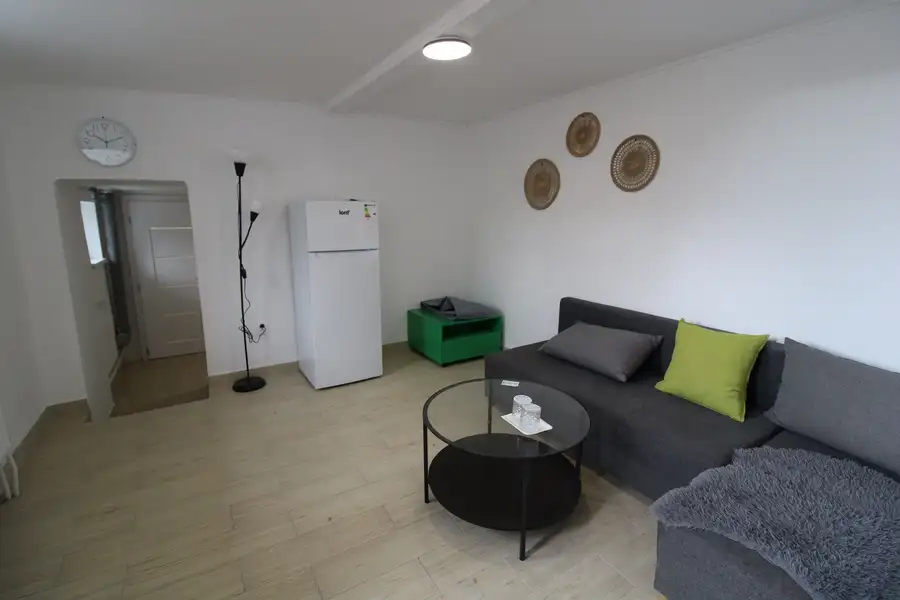
Piešťany, Ostrov a okolie. Ponuku si môžete prezrieť podľa lokality.
Nehnuteľnosti v lokalite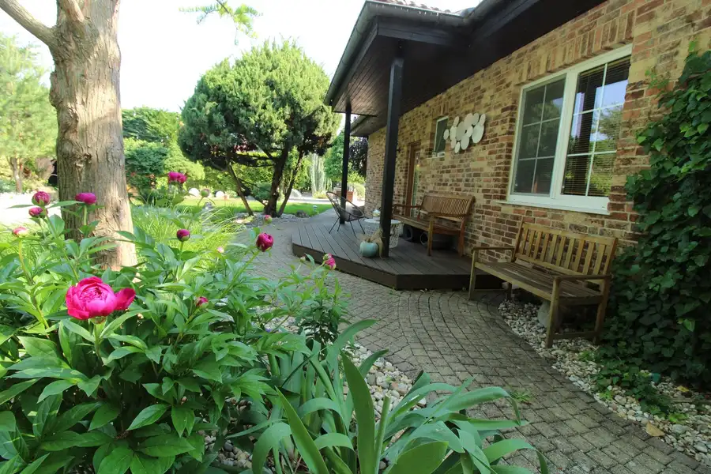
Odhad trhovej ceny, príprava prezentácie, obhliadky, zmluvy a odovzdanie nehnuteľnosti.
Dohodnúť stretnutieKaždý špendlík je jedna nehnuteľnosť z mojej ponuky. Kliknite a pozrite sa.
© prispievatelia OpenStreetMap
Na čo sa pýtate najčastejšie, skôr než sa stretneme.
Odhad trhovej ceny vychádza z aktuálnych ponúk a predajov v lokalite, nie z cenníkových tabuliek. Podmienky Vám poviem pri prvom telefonáte.
Najprv obhliadka a odhad ceny, potom príprava prezentácie (fotografie, popis, inzercia), obhliadky so záujemcami, rezervačná zmluva, kúpna zmluva, návrh na vklad do katastra a odovzdanie nehnuteľnosti. O každom kroku viete vopred.
Najrýchlejšie cez WhatsApp alebo telefón. Termín stretnutia alebo obhliadky dohodneme podľa Vás.